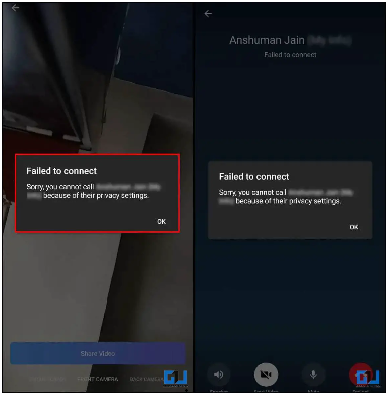

查看Telegram 上是否有人屏蔽您的方法
当联系人屏蔽您时，Telegram 不会通知您。这可能会使您很难了解用户是否阻止了您。这就是为什么我们列出了一些迹象，可以帮助您确定 Telegram 用户是否阻止了您。
迹象 1 – 消息未送达
第一个迹象是您发送的消息不会传递给其他人。尽管在未连接到互联网时也会发生这种情况，但您必须等待一段时间。如果它仍然只显示一个勾号而不是两个复选标记，则可能意味着用户已阻止您。但还有其他迹象需要注意，以了解该联系人是否在 Telegram 上屏蔽了您。

标志 2 – 个人资料图片替换为姓名首字母
另一个标志是检查用户的个人资料图片。假设他们的图像突然被他们名字和姓氏的首字母取代。这可能表明他们已阻止您。然而，与 WhatsApp 不同的是，您仍然可以查看他们的简历。
尽管他们很可能删除了个人资料图片，但他们也可能没有将您添加为联系人。
标志 3 –“在线”状态不再可见
默认情况下，您可以通过某人的状态检查某人在 Telegram 上是否处于活动状态或“在线”。但如果有人屏蔽了你，那么即使他们在 Telegram 上很活跃，状态下也只会显示“上次看到很久以前”的消息。
标志 4 – 用户无法添加到群聊
您还可以尝试将联系人添加到 Telegram 群聊中。一般来说，将某人添加到群聊中应该不成问题。但是，当您尝试将阻止您的人添加到群聊时，您会收到以下错误：“发生错误。 USER_IS_BLOCKED 。 “
这可以确保其他人已阻止您。如果其他人愿意，他们可以将您添加到群聊中，前提是您也没有阻止他们。
迹象 5 – 无法连接语音或视频通话
尝试对相关人员进行语音或视频通话。如果呼叫无法连接，并且您收到“由于隐私设置而无法连接呼叫”错误，则这可能表明您可能被阻止。

如果您被屏蔽，联系人将无法接听您的电话，也无法看到您尝试给他们打电话。
标志 6 – 验证帐户是否未被删除
如果用户删除了 Telegram 帐户，您可能会遇到上述一些迹象。点击用户的个人资料照片以验证该帐户是否仍处于活动状态。如果您在名称应有的位置看到“已删除的帐户”，则该人已删除其帐户。
如果他们的名字仍然可见，并且您在个人资料照片中看到他们的姓名缩写，则很明显该用户已阻止您。


{kind=link}
{kind=link}
{kind=link}
{kind=link}